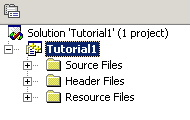
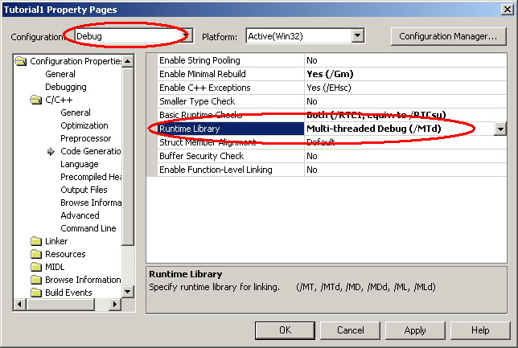

|
Tutorial 1 Part 1 - DotNET
Technical terms used in this tutorial can be found in the glossary. This tutorial assumes the ReplicaNet files are in the default location used by the installer.
This tutorial shows:
-
How to create a simple ReplicaNet project from scratch, using Microsoft Visual C++dotNET. This tutorial uses Visual Studio 2003 however the techniques described are also similar for newer versions.
-
How to set-up a new project with the necessary header include files.
-
Prepare some custom build rules to build ROL files using the ROLCompiler tool.
Start Microsoft Visual C++ dotNET
If there is a solution loaded then Menu bar->File->Close Solution.
Now create our workspace.
Menu bar->File->New->Project...
Then pick "Visual C++ Projects" from the left hand side and "Win32 Project"
Change the "Location:" Box
to "C:\Program Files\Replica Software\ReplicaNet\"
Change the "Name:" Box
to "Tutorial1"
Click "OK".
Select "Application Settings", select "Console Application" and check "Empty Project"
Click "Finish".
Solution created
The Solution view should display. If this does not display then you can open
the display by choosing:
Menu bar->View->Solution Explorer
| A view containing "Source Files", "Header Files" and "Resource Files" should be displayed. |  |
Open the menu above the "Tutorial1" entry in the list. Choose "Add->New Folder".
Name the new folder "ROL Files".
| Open the menu above the "ROL Files" folder and pick "Properties". From the open "Properties" window change the "Filter" box to be "rol". |
Adding an extra folder helps to keep ROL files, that describe objects, separate from our other source files.
Open the menu above the "Tutorial1 files" entry again and choose
Add->"New Folder" once more.
Name the new folder "Compiled Objects"
This folder is where the compiled ROL file output files can go to keep the project tidy.
Open the menu on "Tutorial1" again and choose
"Properties".
Change "Configuration:" to
"All Configurations".
Choose the "C/C++"->"General" item.
Change the "Category:" to "Preprocessor"
Change "Additional include directories:" to
"..\ReplicaNetPublic\Includes"
Choose the "C/C++"->"Code Generation" item.
Change "Configuration:" to "Release", answer
"Yes"
Change the "Runtime Library:" to "Multi-threaded
(/MT)".
Change "Configuration:" to "Debug", answer
"Yes"
Change the "Runtime Library:" to "Multi-threaded Debug (/MTd)".

Click "OK".
Start adding files to the project.
Open the menu over "Tutorial1" and choose
"Add->Add New Item..."
Make sure "C++ File" is selected. Change the
"Name:" box to "main.cpp"
Click "Open".
NOTE: After adding a file to the project you might be asked if you want to add it to source control. You can usually choose no for now.
However source control is a good idea for projects. Dealing with source control is really beyond the scope of this tutorial.
The solution view will then update to contain the new file and put the new file in the "Source Files" folder.
To view the filenames in each folder click the cross
box to the left of the folder name.
| Gives |
To edit each file you can double click the file name and the file will display. The newly created "main.cpp" file should be empty.
Now add the ReplicaNet amalgamated source file found in "C:\Program Files\Replica Software\ReplicaNet\ReplicaNetPublic\AmalgamatedReplicaNet.cpp" using similar steps as the above.
Now we can start writing our ReplicaNet program.
Double-click the "main.cpp" filename to edit the file and add this code to the "main.cpp" file.
Open the menu over "Tutorial1" and choose "Add->Add
New Item..."
This time choose "Text File (.txt)"
Change the "Name:" box to "Application.rol".
Click "Open".
The solution view will then update to contain the new file and put the new file in the "ROL Files" folder.
Double-click the "Application.rol" filename to edit the file and add this code:
Tip: When editing rol files, the file must end with a
carriage return otherwise the RNROLCompiler will display the message
"warning : EOF encountered while close braces
needed".
Custom build rules for ROL files
Now we need to tell dotNET how to compile ROL files. This uses the custom build rules available to us.
Open the workspace projects settings by opening the menu on "Application.rol" in the
solution view and choosing "Properties"
Select the "Custom Build Step" folder.
Change "Configuration:" to be "All Configurations".
In the "Command Line" box change in to be:
"..\ReplicaNetPublic\RNROLCompiler\bin\rnrolcompiler.exe $(InputName).rol $(InputName).cpp $(InputName).h"
In the "Outputs" box change it to contain "$(InputName).cpp;$(InputName).h;"
The dialog should look like:
Tip: Remember how to update the custom build settings because you will need to repeat it for every ROL file you add to your application. DotNET does not inherit settings for newly added files from the folder or file type.
Click "OK".
Now try to build the solution from
"Menu Bar->Build->Build Solution". You will
get a link error about an "unresolved external",
this is normal.
The "Application.rol" file should have generated two source files called "Application.cpp" and "Application.h".
These files, even though they generated by the ROLCompiler, need to be
compiled by dotNET.
To add these files to the project open a menu over "Tutorial1 files" in the workspace view.
Choose "Add->Add Existing Item...".
In the file open dialog, select "Application.cpp" and
Application.h".
Click "Open" to add these files. You might want to add these
generated files to the "Compiled Objects" folder
to keep everything tidy.
Try a build.
Choose Menu bar->Build->Build Solution
You should see this output in the build output window.
Now looking at the "Application.cpp" and "Application.h" (Application.h
is in the "Header Files" folder) you should see some generated code from the ROL compiler.
NOTE: At the top of these two source files is "/* Auto-generated with
RNROLCompiler Vx.x.x.x don't edit */" which tells you the files get generated by the ROL Compiler. Changes in these files will get lost if they are edited.
At this stage the application does not do much except allocate a new ReplicaNet class.
Now we can start to add C++ classes. These classes could be objects in a game that control enemies or the player, for example.
This is covered in tutorial 1 part 2.